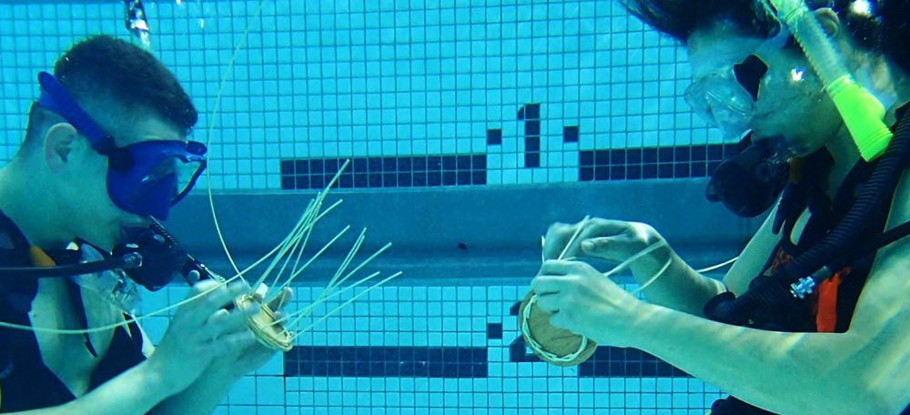
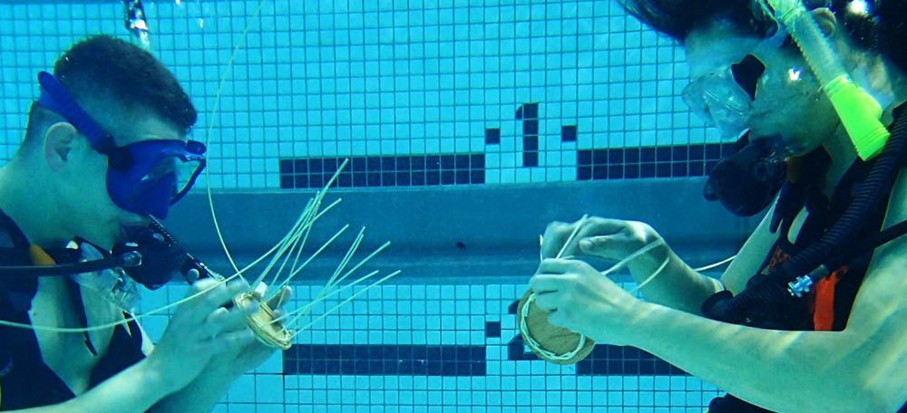

Underwater Basket Weaving
Underwater basket-weaving is a therapeutic and skillful profession that combines the precision needed for artistic basket
weaving with the finesse needed to do so while underwater. There is no reason to soak the wicker before weaving as you are
already underwater. Underwater basket weaving is a good major and you should not listen to anybody who tells you otherwise.
 
